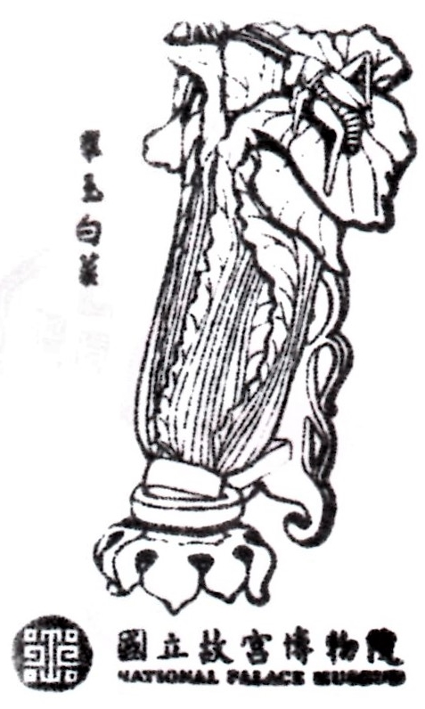
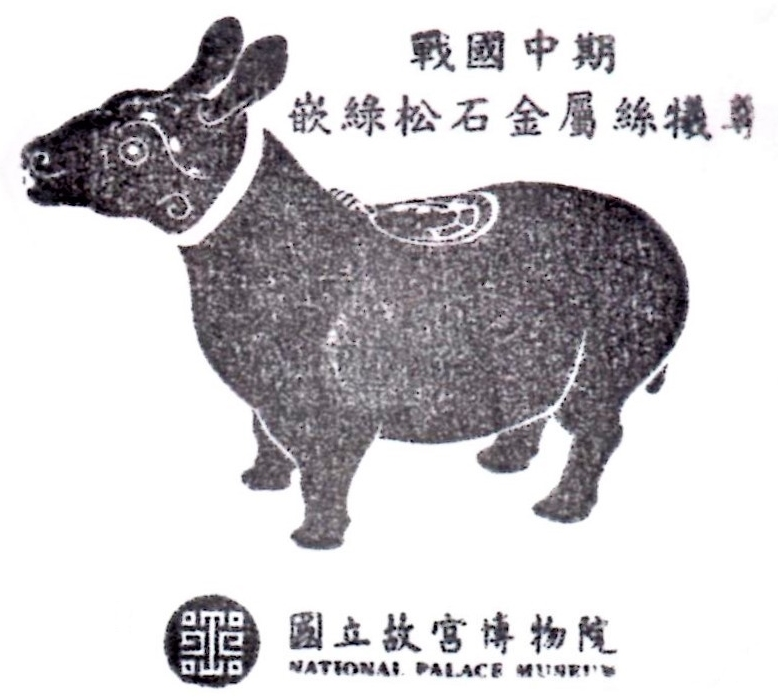

-

国立故宮博物館
日付： 2021/11/02
スタンプ注釈：
トルコ石を埋め込む金属線樽は戦国中期の酒器だ。
スタンプの起源は商朝だ。
-


長い歴史の宝
展覧エリアは地下一階から三階まで。地下一階は児童に芸術を学ぶ空間だ。一階は清朝に皇帝と皇族の家具や古玩や、皇帝と後宮の妃たちの飾り物や、仏像や書類文献などが展示されている。今回は乾隆帝収集した集瓊藻という多宝閣を名称として展覧である。集瓊藻の展示品は華やかで精緻である。特には、多宝閣の形の多様性やゲーム性や精緻度に驚いた。宮廷ドラマのファンにとって、宮廷ドラマ中の本物がこの目で見られるのはとても嬉しい。実は、ずっと多宝格も楽しみにしている。今回の美しい展示品による宮廷生活を想像できる。十分に満足していた。
それに、書類は《四庫全書》や詔書や官僚の記録文献などがある。特別なのは、当時の事件の記録書があって、現場地の調査報告もある。故宮の文字紹介で当時の調査官のように調査が始まる。他には、巫女の毒の使い方や、当時に値段が高くなる本は本物か偽物かをよく考えて必要がある。それはとても面白いね。
二階は明朝と宋朝時代の陶磁器と色々な有名な書画が展示されている。今度の特別展として故宮の至宝と言われる范寬の《谿山行旅》と郭熙の《早春図》と李唐の《萬壑松風》は六週間にわたって展示される。この三家は北宋時代の「巨碑式」山水画の典範だと言われている。同時に、三家の影響を受けて、後世の人に臨模して九枚作品も展示されている。この三枚の名画はもうすぐ千年になるもので貴重な名画である。いい状態に保存するため、展示するごとに少なくとも三年間再展覧ができる。今回で見られるのは運が良かった。
最後は、三階で古代の青銅器と玉器である。ここに故宮で最も人気の文物は「肉形石」と「翠玉白菜」と「毛公鼎」がある。故宮は広きすぎて、全部の展示品を見るに、一日かからなければいけないんだ。残念ながら、今度はもう一度見学直して、南区宮も見に行こう。